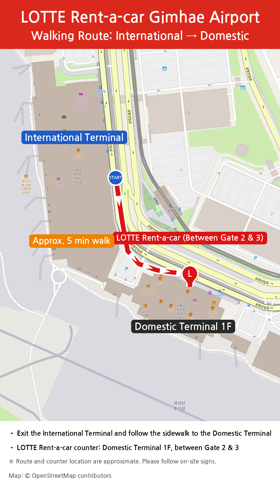

1픽업 위치
국내선 청사 1층 (도착)
카운터는 2번과 3번 게이트 사이에 있습니다.
국제선 청사에서 도보 약 5분 거리입니다.
2준비 서류 (원본 지참)
- 여권 – 신분 확인용
- 유효한 국제운전면허증(IDP) – 유효기간과 차종 등급을 확인해 주세요:
- B 등급: 운전석 제외 8인승 이하 차량
- D 등급: 운전석 제외 8인승 초과 차량
3도착 전 안내
이메일 회신으로 도착 항공편 번호(예: KE1234)를 알려 주세요.
⚡ 빠른 배차 서비스
여권과 국제운전면허증 스캔본을 미리 보내 주시면 빠르고 간편하게 대여하실 수 있습니다!
문의: 김해공항영업소
534046@lotte.net